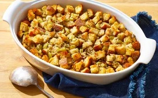

homemade Bread Stuffing
This perfectly seasoned bread stuffing will be an easy-to-make and super flavorful addition to your holiday table.
Ingredients
-
1 cup of Butter: This bread stuffing recipe starts with two sticks of butter
-
Vegetables: You will need chopped celery with leaves and a chopped onion.
- 1.5 cups chopped celery with leaves
- 3/4 cup chopped onion
-
9 cups of Bread: Nine cups of chopped bread cubes should make about 16 servings.
- Seasonings: Season the bread stuffing with salt, dried sage, dried thyme, poultry seasoning, and black pepper.
- 1 teaspoon dried sage leaves
- 1 teaspoon dried thyme leaves
- 1 teaspoon poultry seasoning, or to taste
- 1/2 teaspoon ground black pepper
Steps
- Gather all ingredients.
- Preheat the oven to 350 degrees F (175 degrees C).
- Melt butter in a large skillet over medium-high heat. Cook celery and onion in butter until softened, 5 to 10 minutes.
- Place bread cubes in a large bowl. Season with salt, sage, thyme, poultry seasoning, and black pepper.
- Add cooked onion-celery mixture to bread cubes; stir.
- Pour bread mixture into a large casserole dish; cover the dish with aluminum foil.
- Bake in the preheated oven until heated through and golden on top, about 1 hour.
- Enjoy.